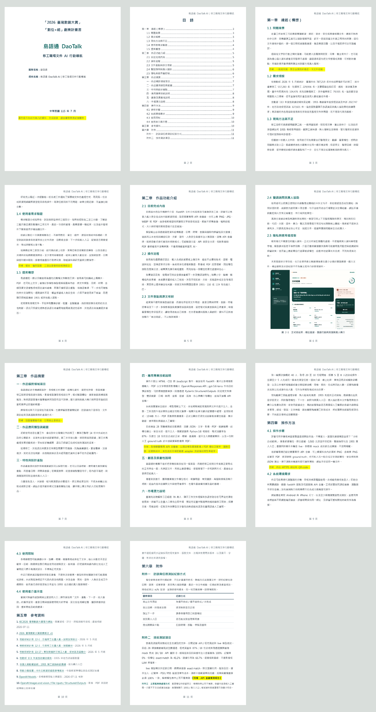
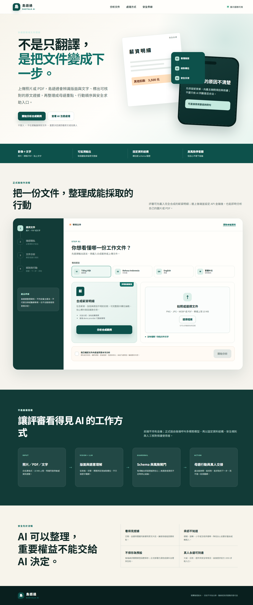

IEC2026 臺灣數創大賞
同步於
最新正式工作版 · 送件證據待補
島語通 DaoTalk AI
把看不懂的臺灣職場文件，變成母語重點、可核對證據、能執行的下一步，以及找得到的真人協助。
目前主軸已收斂為「在臺移工的職場文件 AI 行動導航」。本頁以專案的 交付成果/README.md 為最新索引，不再沿用早期的廣義生活導航敘事。
展示界線：GitHub Pages 可操作合成範例與前端備援；自訂圖片、PDF 或文字的 live AI 分析仍需 FastAPI 後端與正式 API 設定。

11
頁最新計畫書
A4 版面已驗證
28/28
後端測試通過
程式涵蓋率 87%
18/18
離線案例完成
API error 0
13 幕
正式影片動畫
全長 200 秒
Latest deliverables
組員可直接查看的最新成果
下列檔案已鏡像進網站儲存庫，部署到 GitHub Pages 後不會依賴本機的上層資料夾。
Scope & status
哪些已完成，哪些還不能說完成
所有狀態沿用正式驗收報告的界線，避免把 mock、合成資料或待執行目標寫成 live 成果。
Ready
目前可展示與送審
- 圖片、PDF、TXT 與貼文字的輸入介面與 API 路徑
- 結構化輸出、證據欄位、本地風險與提示注入防線
- 正式前端、合成中越薪資單、18 份案例與可重跑評測
- 11 頁計畫書、13 幕影片與訪談執行素材
- 沒有後端時會誠實顯示非 AI 備援，不假裝辨識圖片
Pending
送件前最高優先
- Live 多模態評測：用競賽專用金鑰跑固定影像／PDF 資料集。
- 至少 5 位移工：完成同版文件任務並保留完成率與時間。
- 母語人工審閱：首波至少完成越南語正式檢核紀錄。
- 正式 HTTPS：部署固定網址、後端、secret manager 與濫用控制。
- 最後一致性：網站、影片、計畫書與評測數字同步凍結。
Verification
目前可核對的驗證數據
以下是 2026-07-11 的正式版內部驗收，不是主辦單位評分，也不是 live OCR／LLM 準確率。
內部嚴格評分
78/100
離線作品與送審素材通過；live AI 與第一手使用者證據仍待補。
- 後端測試
- 28/28通過
- 程式涵蓋率
- 87%通過
- Offline mock
- 18/18API error 0
- 細碼風險召回
- 100%規則基線
- 欄位 exact match
- 41.2%規則基線，未達門檻
- 可評分幻覺率
- 0%規則基線
Decision history
早期策略與版本歷程已封存
7/7 的「移工／新住民多語生活導航」首頁與三份初稿仍完整保留，方便回查定位如何從生活導航收斂為職場文件行動導航；它們不再代表目前成果。